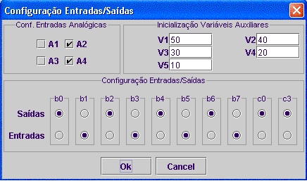

Bloco Inicio de programa
Este bloco deve ser configurado no inicio de cada programa. Para tal basta clicar com o botão esquerdo do rato sobre o bloco.
Com este bloco configuram-se os vários pins do robot como entradas ou saídas.
Podem-se ainda inicializar as variáveis auxiliares.
nota: no caso de estar a usar o programa no âmbito da experiência do elab, estão disponiveis na página da experiência instruções para configurar as variáveis como entradas ou saídas.
